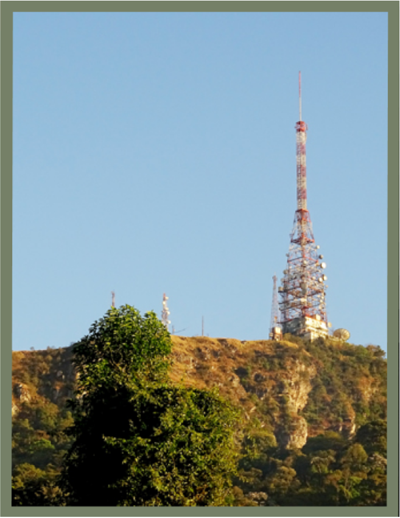
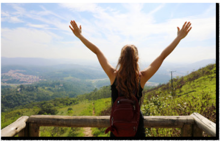

Turismo
Lazer no Jarguá!


Em meados da década 60, quando a prefeitura de São Paulo transformou o local em parque, o elevado começou a ser chamado de Pico do Jaraguá pelos moradores e turistas.
Entretanto, devido a reentrância que corta o morro em dois pedaços, ele é oficialmente reconhecido como dois, ou seja, os dois picos do Jaraguá.
O monte mais alto conta com 1.135 metros e é chamado de Pico do Jaraguá
O monte mais alto conta com 1.135 metros e é chamado de Pico do Jaraguá

Ao longo dos quase 30 quilômetros quadrados do distrito e bairro Jaraguá há outros morros que se impõem no cenário. Um deles, o qual pode ser acessado através da rua do Pôr do Sol e possui cerca de 840 metros de altitude, o Morro Bandeirantes.
Carcomido pela empresa Conspedra que possuía uma pedreira no local antes da década 80, expõe seus granitos para quem passa pela Estrada do Corredor. Esse morro é chamado pelos moradores locais de “Pedra da Baleia“.

Encravado na borda da Cantareira está aquele denominado como Torres Parque Taipas ou Morro de Taipas, com seus mais ou menos 1.211 metros de altura.

A trilha da Bica como o próprio nome sugere, conduz o visitante até uma bica d'água, seu trajeto é linear com aproximadamente 800 metros de comprimento, é possível de contemplar exemplares da vegetação nativa da mata atlântica como a palmeira juçara (Euterpe edulis) e cedro-rosa (cedrela fissilis).

Caminhada por uma pequena extensão de floresta nativa do parque com rica biodiversidade, perfeita para contemplação da vegetação, com destaque às espécies de orquídeas, mas também com possibilidade de avistar espécies de animais protegidos pela UC, que está situada na cidade de São Paulo.

A trilha realiza o contorno em volta de um dos lagos inseridos no parque, ao longo do percurso é possível de se apreciar e contemplar a paisagem composta por exemplares da flora nativa da mata atlântica.

A trilha do Pai Zé possui aproximadamente 1800m de extesão, sendo a principal trilha da unidade por proporcionar a possibilidade de ir da parte baixa do parque até o ponto mais alto, onde se localiza o pico do jaraguá; ao longo do percurso é possivel de observar dois tipos de bioma (mata atlântica e cerrado) e seus respectivos exemplares de flora nativa.

O roteiro do quiosque Chinês é uma proposta para o visitante de espaço com quiosques para aproveitar a paisagem de vegetação do PE Jaraguá enquanto descansa ou se alimenta, podendo observar espécies da fauna.
O parque conta com paisagens Incríveis para aqueles visitantes que adoram clicar fotografias (comuns, panorâmicas, selfies, etc.) nos mirantes, nas trilhas, nos parques do distrito, entre outros lugares.
